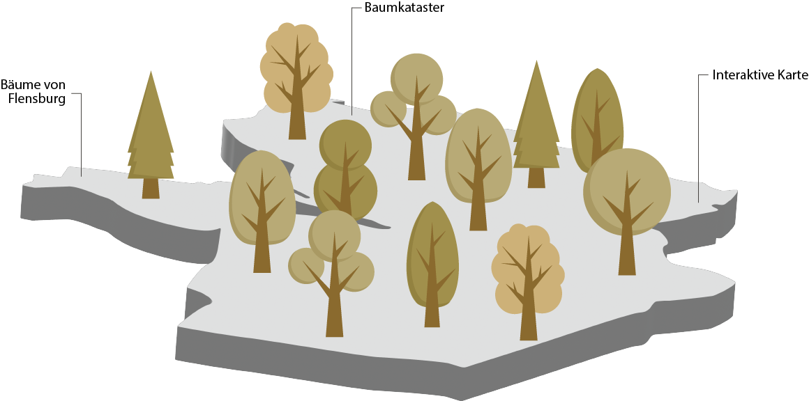
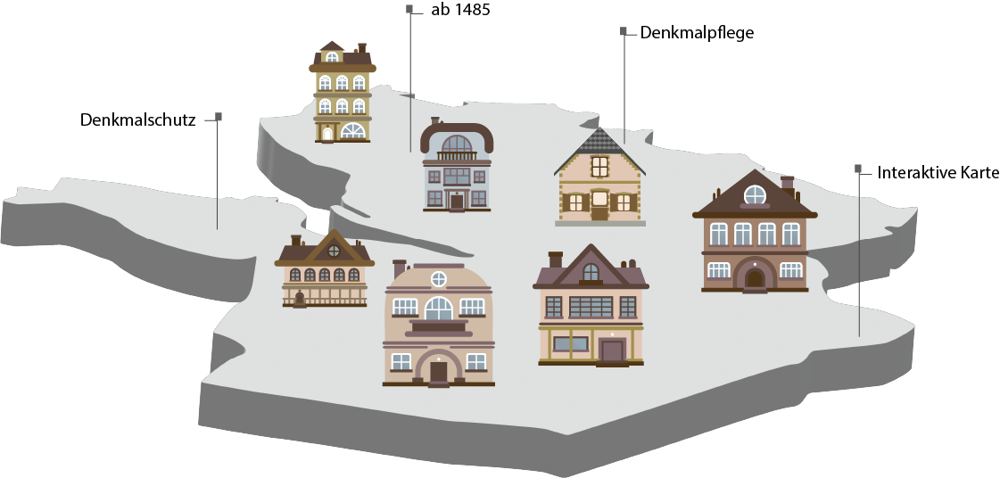
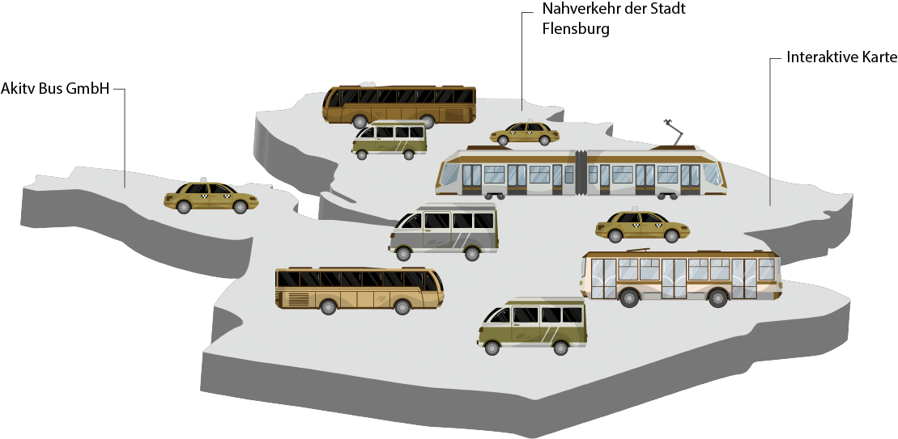
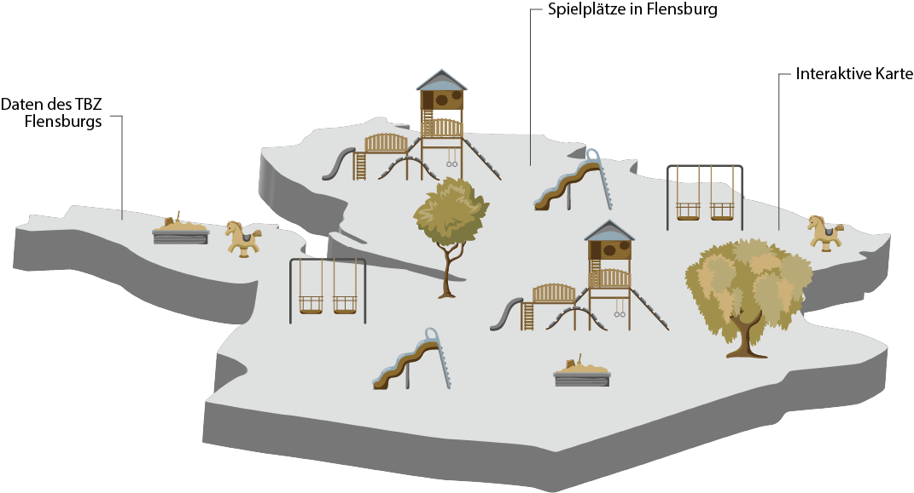
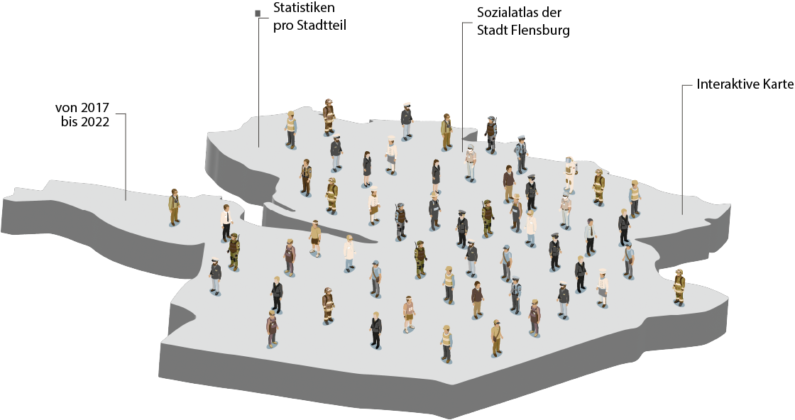
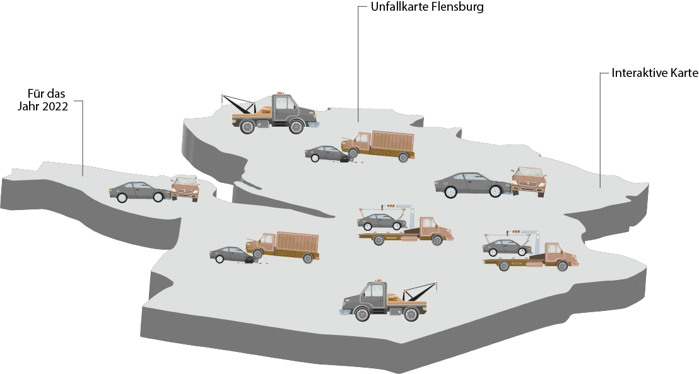
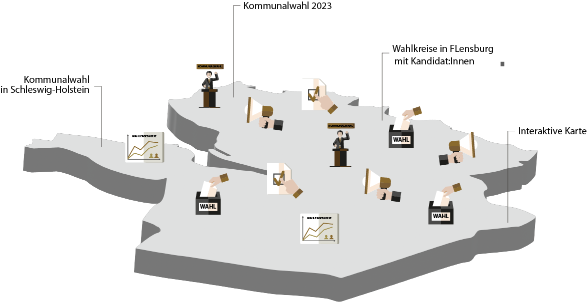
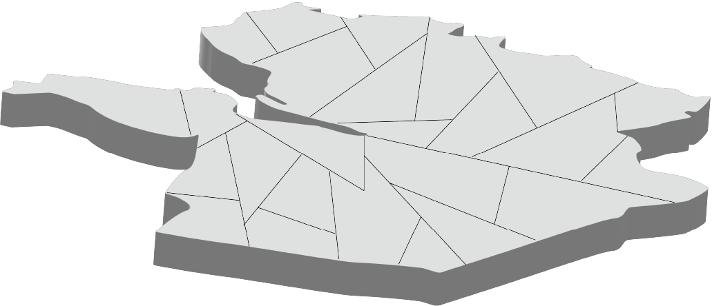

OK Lab
Flensburg
Du fragst dich, was Datenverarbeitung, UI/UX Design, Softwareentwicklung, Stadtplanung, Verwaltung und Datenjournalismus gemeinsam haben könnten? Nun, wir auch! Aber keine Sorge, wir sind die Supergroup des Ehrenamts, die es herausgefunden hat! Wir sind wie die Avengers, aber ohne Capes - und dafür mit noch mehr Datenpower! Wir bündeln unsere Superkräfte, um die Welt ein Stückchen transparenter zu machen. Unser Ziel: Behördendaten für alle verständlich und zugänglich zu machen. Wir treffen uns immer Mittwochs, 18 Uhr im Aktivethuset in Flensburg.
Projekte
Straßenbäume der Stadt Flensburg
Im ersten Schritt haben wir einen vorhandenen Datensatz der Straßenbäume der Stadt Flensburg genutzt, um eine einfache Darstellung auf der Karte als transparente Anlaufstelle für Interessierte anzuzeigen



Denkmäler in der Stadt Flensburg
Die Idee zu dieser Karte ist während eines Spaziergangs durch die Flensburg entstanden. Wir haben uns gefragt, ob es eine Möglichkeit gibt, Informationen zu historischen Gebäuden digital anzeigen zu lassen

Nahverkehr inder Stadt Flensburg
Der Nahverkehr spielt eine entscheidende Rolle in unserem täglichen Leben. Er ermöglicht es uns, zur Arbeit zu gelangen, Freunde und Familie zu besuchen und unsere Stadt zu erkunden. Ein effizienter


Recyclingcontainer in Flensburg
Im ersten Schritt haben wir einen vorhandenen Datensatz der Straßenbäume der Stadt Flensburg genutzt, um eine einfache Darstellung auf der Karte als transparente Anlaufstelle für Interessierte zu

Spielplatzkarte für die Stadt Flensburg
Diese webbasierte Karte ist auf Basis der Daten des TBZ Flensburg entstanden. Diese Institution führt zwar selbst eine Karte der “Spielflächen”, wie sie im Amtsdeutsch bezeichnet werden



Digitaler Sozialatlas der Stadt Flensburg
Der digitale Sozialatlas soll eine Grundlage für verschiedene Planungs-aktivitäten der Stadt Flensburg und deren Büger:innen anbieten. Ziel ist die differenzierte Beobachtung von relevanten

Unfallkarte für die Stadt Flensburg
Während einer kleinen Brainstorming Session ist diese interaktive webbasierte Karte mit den Daten des Bundesamtes für Kartographie und Geodäsie entstanden. Nach einigen Stunden der maschinellen



Kommunalwahlen Schleswig-Holstein
Für die anstehnden Kommunalwahlen in Schleswig-Holstein haben wir uns vom OK Lab Flensburg zur Aufgabe gemacht die Polygonen der Gebietsgrenzen der Wahlkreise als auch der Wahlbezirke der jeweiligen

Bodenfläche nach Art der Nutzung
Diese interaktive Karte zeigt die Verteilung der verschiedenen Flächennutzungsarten beim Klick auf die entsprechende Gemeinde an. So lässt sich in Kürze herausfinden in welchen Regionen der


 Bildungsatlas für die Stadt Flensburg
Bildungsatlas für die Stadt Flensburg
Die Idee, einen offenen Bildungsatlas für Flensburg zu entwickeln, ist aus der eigenen Suche nach einer Grundschule entstanden. Mit dieser Webseite zeigen wir die Umsetzbarkeit eines solchen Systems.

OpenAPI - lass die datenquelle sprudeln
Bereit, Daten für dein Projekt zu plündern? Folge dem blinkenden Pfeil! Wir sind die Geheimagenten des Datenuniversums und unsere Mission ist es, dir die Daten, nach denen du suchst, mithilfe unserer ultracoolen API bereitzustellen. Kein Tresorknacken oder Tarnanzüge notwendig - bei uns ist alles legal, transparent und super benutzerfreundlich.
Mitmachen - statt nur zuschauen
Wie machen wir das? Mit offenen Daten, Kreativität und einer Prise Humor! Wir zaubern nutzerfreundliche Visualisierungen aus Behördendaten, Geodaten und Umweltdaten - alles, um die Welt zu einem besseren Ort zu machen. Und das Beste daran? Wir treffen uns regelmäßig, lernen voneinander und haben sogar Spaß dabei! Wenn du also Lust auf ein Abenteuer im Daten-Dschungel hast, komm zu uns. Zusammen werden wir die Welt der Behördendaten erobern und für mehr Beteiligung und Transparenz in Verwaltungen sorgen. Sei ein Teil unserer Supergroup - keine Superkräfte erforderlich!